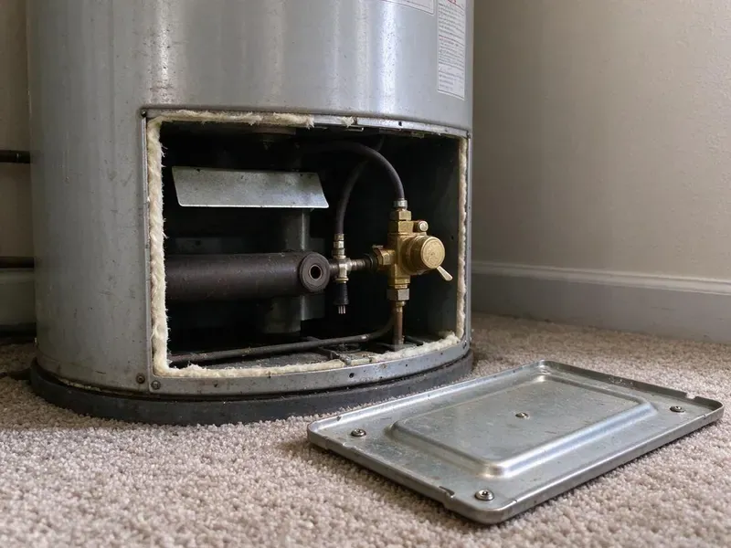

Drain Repairs in Bristol, TN
BGV Plumbing handles drain repairs in Bristol, TN with a camera when the problem is deep.
- Cast Iron Drain Replacement
- Vent and Trap Repairs
- Kitchen, Bath, Laundry & Floor Drains
- Camera Inspection When Needed

Need a Drain Repair This Week in Bristol, TN?
You get a written price before we cut a single fitting.
Drain Repairs in Bristol, TN for Every Fixture
BGV Plumbing repairs drain pipe in Bristol, TN from the fixture trap to the main line. Water hardness in Tennessee varies by source, and areas that draw from limestone aquifers or springs tend to have moderately hard water. Scale and grease narrow the pipe. Once a two-inch kitchen branch is down to the size of a finger, every greasy dish load catches on the buildup and the clog comes back a few weeks later. We fix the pipe instead.
Work we handle every week:
- P-trap, tailpiece and slip-joint repair under sinks and vanities
- Cast iron and ABS drain section replacement inside walls
- Install new drain lines to code

Additional Plumbing Repair Services in Bristol, TN
We offer expert plumbing repair services across Bristol, TN to stop leaks, clear blockages, and keep every fixture working the way it should.


Customers
Why Choose BGV Plumbing for Drain Repairs in Bristol, TN?
A drain that clogs every few weeks is telling you something. Usually it is the pipe. We look for the sag, the bad fitting or the missing vent before we quote, because snaking the same line every month costs more over a year than fixing it once. The repeat calls end.
- Warranty, Workmanship is warrantied in writing, and the parts carry their own warranty.
- Camera When Needed, Deep or repeat problems get a camera so we can see the pipe instead of guessing.
- Cause, Not Symptom, We find out why the drain fails rather than just snaking it again.
Citywide Coverage
Landlords and property managers across Bristol call us for repeat clogs at the same units. It is usually a fitting. We find the cause, fix it, and record what we found so future visits go faster.
Experienced Team
Our plumbers have repaired every kind of drain, from a loose slip nut to a cracked cast iron stack inside a plaster wall. They work fast. A plumber who has pulled hundreds of traps can tell a scale problem from a slope problem in a minute, and that experience keeps the repair pointed at the real cause.
Safety-First Approach
Drain cleaning equipment can hurt people if used wrong. A cable under tension can snap. Our plumbers wear gloves and eye protection, use the right cable size for the pipe, and keep everyone else out of the work area while the machine is running.
Trusted Certified Bristol Plumbing Services Professionals
At BGV Plumbing, we are proud to offer certified plumbing services throughout Bristol, TN. Credentials matter in this trade. Our plumbers hold recognized industry credentials, and they follow strict safety and quality rules on every repair, installation and maintenance call we run.
Call Us Now PHCC Plumbing Contractor Recognition
PHCC Plumbing Contractor Recognition Better Business Bureau (BBB) Accreditation
Better Business Bureau (BBB) Accreditation Angi Certified Pro
Angi Certified Pro ISO 9001 Quality Management Certification
ISO 9001 Quality Management CertificationDrain Repair Services for Bristol, TN Homes
Recurring Clog Repair in Bristol
Monthly clogs mean there is a physical cause. Find it and fix it. The usual suspects are a trap arm with too little slope, a branch line with a belly, scale built up inside old metal pipe or a fitting with a rough edge that snags paper, and each one shows up clearly on a camera or when we pull the trap. We repair the part that catches debris.

Sewer Drain Line Repair in Bristol
Every drain in the house empties into one building drain. Trouble there affects everything. Cracks, offsets and collapses in that line cause whole-house backups, and we repair them with trenchless methods when the pipe qualifies or a small targeted dig when it does not. The camera tells us which.
Laundry and Floor Drain Repair in Bristol
A washer dumps a lot of water fast. Undersized drains spill over. We correct standpipe height, replace cracked laundry box drains and add venting where it is missing, and for garage and utility floor drains we restore the trap seal so sewer odor stays in the pipe. Trap primers get repaired too.
Commercial Drain Repairs in Bristol
Commercial drains see more grease, more paper and more flow than any house. A closed restroom costs business. We repair grease-coated kitchen lines, floor sinks, mop sink drains and restroom branches for Bristol businesses, working early mornings or after hours to keep you running. Regular jetting plans are available.
Main Line Drain Repair in Bristol
A problem in the main line shows up at every drain in the house. The lowest fixture backs up first. Roots, cracks from ground movement and collapsed sections are the common causes, and we confirm which one on camera, then choose between a spot repair, lining or new pipe based on the video. We show you before we quote.
Kitchen Branch Line Repair in Bristol
This branch takes more grease and food than any other line in most homes. Buildup gets deep. We replace cracked tailpieces, fix slip nuts and correct trap height, then jet the branch line and check its fall when the buildup sits past the wall. We look at the disposal outlet too.
Drain Vent Repair in Bristol, TN
Gurgling and slow draining often mean the vent is blocked. Air cannot get in behind the water. Without air, draining water pulls the trap seal along with it and lets sewer gas into the room, which is why we inspect the roof opening and the vent piping inside the walls. Clearing it is often quick.

Leaking Drain Pipe Repair in Bristol, TN
Drain leaks are low pressure, so they drip instead of spray. Most go unnoticed for months. Corrosion, shifting framing and cracked fittings are the usual causes, and we trace the leak by running each fixture and watching the joints, then replace the bad length with pipe that matches what is already there. Every repair is done to code.
Drain Repairs Near Me in Bristol, TN
Searching for drain repairs near me in Bristol usually means water is already where it should not be. We can often come the same day. Our Tennessee plumbers carry traps, fittings and pipe in common sizes, which means one visit usually covers the diagnosis and the repair.
Our Bristol crew knows the housing stock here. It saves time on site. Older neighborhoods tend to have cast iron stacks and galvanized branches, while newer homes run ABS or PVC, so we show up with the right cutters, couplings and fittings for the pipe we expect to find.
BGV Plumbing at a Glance
- Fully licensed plumbing team covering Bristol, TN
- Same-day appointments and 24/7 emergency response
- Clear written estimates, no hidden fees
- 4.9-star rated by 932+ Tennessee customers
Bristol Map
Bristol Information
- Population
- 27,854
- Area codes
- 423/901/276
- Service area
- Bristol and communities within 40 miles
- Nearby
- Johnson City, Kingsport, Morristown, Knoxville
Scale inside a drain catches hair and grease, so narrowed pipe and old fittings in Bristol, TN often fail sooner than people expect. Water hardness in Tennessee varies by source, and areas that draw from limestone aquifers or springs tend to have fairly hard water.
Expert Services
Reach out to BGV Plumbing for reliable plumbing work done by licensed pros in Bristol, TN.
Our Specialized Plumbing Services in Bristol, TN
At BGV Plumbing, we handle the full list of plumbing services across Bristol, TN. We go from leak detection all the way to full system installations, for homes and commercial buildings, and we do it quickly at a fair price. Take a look at our core services below:


How Our Drain Repair Process Works in Bristol, TN
We find the cause before we quote it, and we test the repair before we pack up.
Book the Visit
Call (615) 518-0893 and describe the problem. Most visits happen same day or next.
Find the Cause
We inspect the drain, use a camera when the trouble is deep, and explain what we find.
Fix and Test
We give you a written price, make the repair and check it for leaks at full volume.
Frequently Asked Questions About Drain Repairs in Bristol
A simple clog clearing starts around $150. Main line work costs more. Complex main line repairs can run past $3,000, depending on the drain involved, the extent of the damage and the access. You get a written number after diagnosis.
Yes. Workmanship is warrantied in writing. Replacement parts carry their own manufacturer coverage, which means both the parts and our labor are covered. You will see the terms before we start.
Tightening a slip nut or replacing a plastic trap is fair game. A plunger is always worth a try. Anything inside a wall, under a floor or involving cast iron, or a leak that keeps returning after you have tightened it, is a job for a licensed plumber with the right tools. Chemical cleaners can make things worse.
Unclogging a drain does not need one. Bigger changes might. Replacing a stack, relocating a drain or replacing a section of the building drain in Bristol may require a plumbing permit, depending on local rules and how much of the system is being changed. The permit is on us if needed.
Not with regular use. They are hard on old pipe. Harsh cleaners can soften ABS glue joints and corrode metal drain parts over time, and they rarely remove grease or scale completely, so the clog comes back. A drum auger or jetter is safer.
Clearing a simple clog takes an hour or two. Pipe work takes longer. Replacing a section of main line or opening a wall to swap a cast iron stack may run a day or longer with access and inspections setting the pace. The quote includes a time estimate.
We do. Length depends on the repair. A trap replacement and a cast iron stack swap carry different terms because the parts and the risks are different, so you see the coverage for your specific repair in writing up front. Manufacturer warranties stack on top.
For a fixture unclog or a trap swap, usually not. Major work often needs one. Replacing drain lines, especially work involving excavation or the main sewer line, often needs a plumbing permit from Bristol, so an inspector can check slope, venting and connections. We handle the paperwork.
What Our Customers Say About Our Plumbing Experts

Angela D.
Our sump pump quit during a storm and the water was an inch from the basement carpet. BGV Plumbing put in a new pump with a battery backup that same evening. We have had two heavy rains since. It kicked on both times.
Sump Pump · Morristown, TNPatricia H.
We had a slab leak that two other companies could not find. BGV Plumbing located it in under an hour with a listening device. They rerouted the line through the attic instead of breaking up the floor, so we kept our kitchen tile.
Slab Leak Repair · Bristol, TN
Sofia M.
Two new toilets went in during one visit. The tech set them on new wax rings and swapped the old supply lines. He also noticed our bathroom faucet dripping and replaced the cartridge while he was there. No mess left behind.
Toilet Installation · Knoxville, TN
Carlos V.
Our house still had galvanized pipe, and upstairs the shower was a trickle. The crew repiped everything in PEX over three days and patched every drywall hole before they left. The pressure difference is night and day.
Repiping · Morristown, TN
Mark T.
The floor drain in our office break room backed up every few weeks. The plumber ran a cable, then put a camera down and found roots at a joint about thirty feet out. Seeing it on the screen made the decision easy.
Drain Cleaning · Cleveland, TN
James P.
Our restaurant had a slow leak at the hand sink that was rotting the cabinet base. BGV Plumbing came in at six in the morning before prep, replaced the trap and both supply lines, and was packed up before my first cook clocked in.
Commercial Plumbing · Morristown, TN